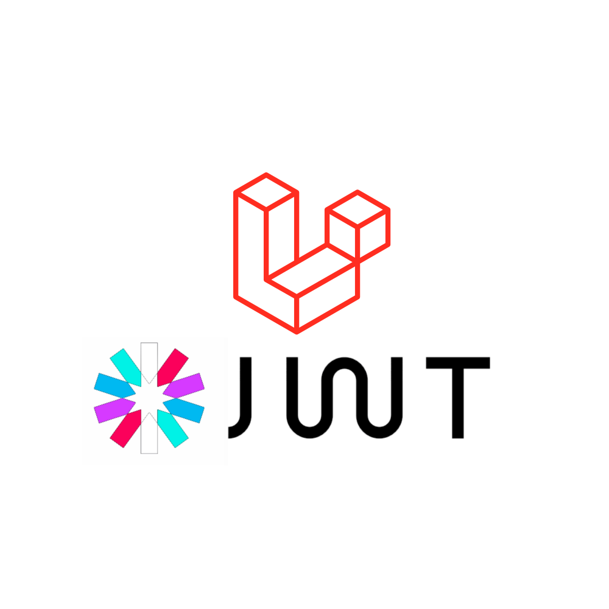
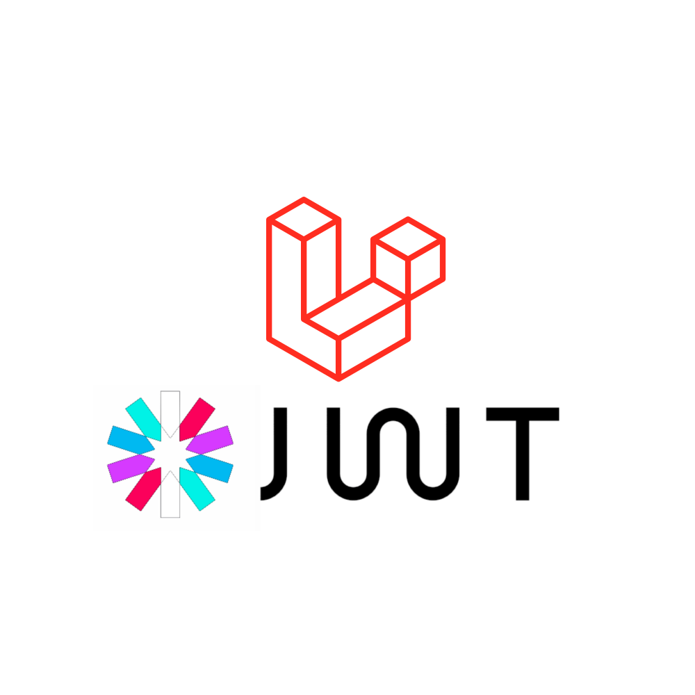

Projetos
Back End

 



Atualmente estou trabalhando em uma aplicação web. Um serviço de gerencimento escolar para uma ONG.
O objetivo dessa aplicação é gerenciar e analisar os dados, fornecendo informações para tomada de decisão, atualizar
o site em tempo real mantendo assim o portal de tranparência sem atualizado.
Exemplo de APIs: Express, JWT, Bcrypto, FileSytem
Como ainda não contem arquivos confidenciais este usuário tem permissão de acesso.
Usuário: Visualizar
Email: visualizar@view.com
Senha: visualizar
Cuidado com suas ações estou monitorando tudo!

Formação
{kind=link}
Técnico
Técnico em Musica no Conservatório Contraponto – 2009 a 2012 Técnico em Instrumento Musical, Viola Erudita.
{kind=link}
Experiência
Prof. Informática
GDOT - Grupo de Oportunidade para o Trabalho
Mais
Tem como objetivo capacitar e apoioar jovens para conquistar o primeiro trabalho. É um projeto que acontece na Associação Alvorada.
Como profissional de informatica, sou responsavel por planejar, ministrar e relatar o andamento do curso de informática.
Sou responsavel tambem pela manutenção dos equipamentos de informática da instituição.
Como educador social, o relacionamento com os jovens é o mais importante. Bom diálogo, fortalecer o vínculo, servir de exemplo, protagonizar são o ponto chave para esse projeto.
Veja abaixo um dos trabalho feito
por esse jovens.
Prof. Musica
Orquestra Jovem Alvorada
Mais
Professor de violino e viola, ministrando aulas de orquestração, ensaio e apresentações.
Elevando a alta estima, a cooperação e a disciplina, a Orquestra Jovem Alvorada oferece oportunidades de acesso à cultura, desenvolvimento e inserção social, despertando o interesse pela musica erudita e popular. O programa tem como público-alvo crianças e adolescente de 6 a 15 anos, de ambos os sexos, em situação de vulnerabilidade social, residentes preferencialmente no território de abrangência da entidade.
Video em breve...